题目问的是 What do you say when…?——注意它问的不是「你会怎么做」，而是「你会说出哪句话」。所以答案必须是一句能直接引用的原话，不要答 I will be polite 这种。
先给原话 — 直接引号说出来I'd say, "Nice to meet you."
再补一句同义替换 — 显示你会的不是一个Or if it's more formal, "It's a pleasure to meet you."
最后说场合或语气 — 解释为什么这么说I'd use the second one with someone older, or in a work situation.
三档语气的意识，是这节课真正的考点。同样一句「我不同意」，对朋友说 I don't think so.，对导师说 I'm not sure I agree.，在会议上说 I see your point, but I'd look at it differently. 老师问「你会说什么」时，能主动区分场合，分数立刻不一样。
最容易踩的雷：How do you do?
课本年代久，有些教材还教这句当「初次见面」。它现在听起来像上世纪的老派英式英语，实际回答也是同样一句 How do you do?。日常用 Nice to meet you. 就够了，别用这句。
03课本给的标准答案长什么样
例题问的是：你要告诉别人一件事、但不想他再传出去，你说什么。课本给了两句，正好一短一长、一急一缓。
Example
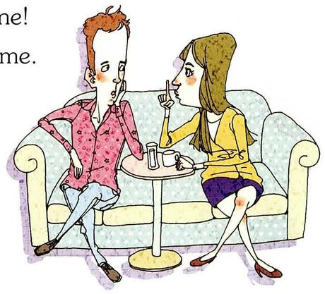
Telling a secret /ˈsiːkrət/
What you seeA man and a woman sitting on a sofa. She's leaning in close and holding one finger up to her lips — the universal "keep quiet" gesture.
What you say"Don't repeat this to anyone!" / "It's just between you and me."
Say it like thisI'd say, "Don't repeat this to anyone." Or if I want to sound a bit softer, "It's just between you and me." The second one sounds more like I trust you, the first one sounds more like a warning — so it depends how close we are.
课本题干的措辞也值得抄走
表达
意思 / 用法
reveal
/rɪˈviːl/ 透露、揭露。比 tell 正式。reveal a secret 是固定搭配
swear not to repeat sth
发誓不把某事说出去。swear to do 结构
cut in front of sb
插到某人前面（插队 / 打断）。第 14 题的题干用的就是这个
have sth repeated
让人把某话重复一遍。have sth done 使役结构
change the topic
换个话题。也可以说 change the subject
04十五个场景：这个场合到底该说哪句
每张卡三段：What you see 看图确认场景，What you say 给两三句可选原话（由随意到正式排列），Say it like this 是可以直接念出口的完整回答。建议每张卡挑一句最喜欢的背下来。
01
Meeting someone for the first time
What you seeA man and a woman shaking hands, both smiling. It's a first meeting, not a reunion.
What you say"Nice to meet you." / "It's a pleasure to meet you." / "Good to finally meet you."
Say it like thisI'd say, "Nice to meet you." If it's someone older or a work contact, I'd go with "It's a pleasure to meet you." And if we'd been emailing for a while, "Good to finally meet you" is nicer, because it shows I'd been looking forward to it.
02
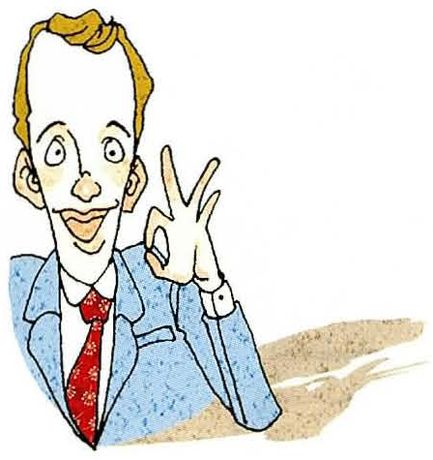
Agreeing with someone
What you seeA man in a suit making an "OK" sign with one hand and pointing up with the other, eyebrows raised — very enthusiastic.
What you say"I totally agree." / "You're absolutely right." / "That's exactly how I see it."
Say it like thisI'd say, "I totally agree." Or "That's exactly how I see it" — that one sounds a bit more thoughtful than just saying you agree, because it means you'd already reached the same conclusion.
03
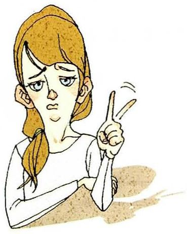
Disagreeing with someone
What you seeA woman with her arms folded, shaking her head slightly, one finger raised as if about to correct something.
What you say"I'm not sure I agree." / "I see what you mean, but…" / "Actually, I'd say the opposite."
Say it like thisDepends who I'm talking to. With a friend I'd just say "I don't think so." With my supervisor I'd say "I see what you mean, but I'd look at it a bit differently" — that way I disagree without sounding like I'm dismissing them.
04
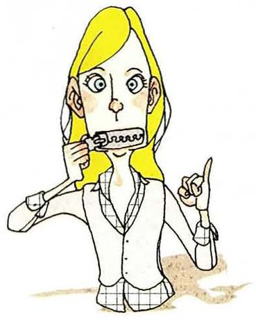
Promising to keep a secret
What you seeA woman literally pulling her fingers across her lips like she's zipping them shut, with one hand raised.
What you say"My lips are sealed." / "I won't tell a soul." / "This stays between us."
Say it like this"My lips are sealed" is the classic one — it matches the gesture in the picture. "I won't tell a soul" is a bit stronger, like you're promising. And "This stays between us" is the most natural in a serious conversation.
05
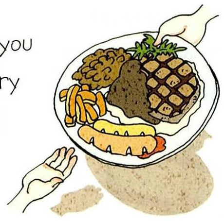
Suggesting someone try a new food
What you seeA plate with meat, fries and vegetables, being pushed forward by a hand. It's an offer.
What you say"You should try this." / "Go on, have a bite." / "Trust me, you'll like it."
Say it like this"You should try this" is safe. But "Go on, have a bite" is what people actually say when someone's hesitating — go on is the nudge. And if they look suspicious, "Trust me, you'll like it" usually works.
06
Telling someone big news
What you seeA man holding up a globe with both hands; the woman in front of him has her arms out and her mouth open in surprise.
What you say"Guess what!" / "You'll never believe this." / "I've got some news."
Say it like this"Guess what!" is what I'd say to a friend — it makes them stop and listen. "You'll never believe this" works the same way but it's a bit more dramatic. And "I've got some news" is the calm version, for when the news isn't necessarily good.
07
Someone just got back from a long trip
What you seeTwo women hugging. There's a sign reading Welcome home, and two suitcases with airline stickers on them.
What you say"Welcome back!" / "How was your trip?" / "It's so good to have you back."
Say it like thisFirst "Welcome back!", then straight into "How was your trip?" — that's the natural order, greet and then ask. If they were away a really long time, "It's so good to have you back" is warmer.
08
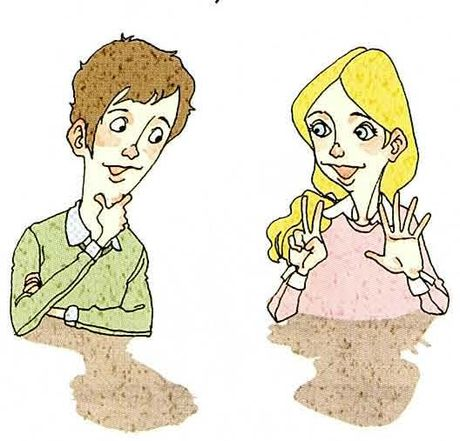
Checking whether someone understood you
What you seeTwo people. The man has his hand on his chin, thinking; the woman is making an "OK" sign with both hands, confirming.
What you say"Does that make sense?" / "Am I making myself clear?" / "Are you with me so far?"
Say it like this"Does that make sense?" is the one I'd use — it's polite because it puts the blame on the explanation, not on the listener. "Am I making myself clear?" sounds much more like a teacher, or even a warning, so I'd avoid it.
09
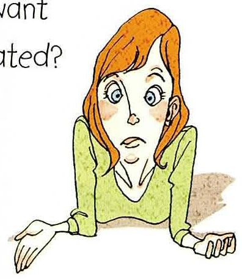
You didn't catch what someone said
What you seeA woman leaning forward with her elbows on a table, eyebrows raised, mouth slightly open — clearly lost.
What you say"Sorry, what was that?" / "Sorry, could you say that again?" / "I didn't quite catch that."
Say it like this"Sorry, could you say that again?" is the one to learn — it works in every situation. "I didn't quite catch that" is a bit more polite and it's useful on the phone. If it's someone I know well, just "Sorry, what?" is fine.
10
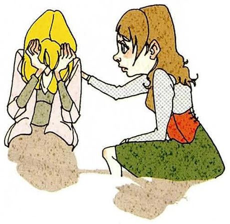
Hearing sad news from someone
What you seeA woman sitting with her head in her hands, crying, while another woman kneels beside her with a hand on her shoulder.
What you say"I'm so sorry to hear that." / "That's awful. Is there anything I can do?" / "Let me know if you need anything."
Say it like this"I'm so sorry to hear that" first — it always works. Then "Is there anything I can do?" is better than "Let me know if you need anything," because you're actually offering instead of putting the burden on them to ask.
11
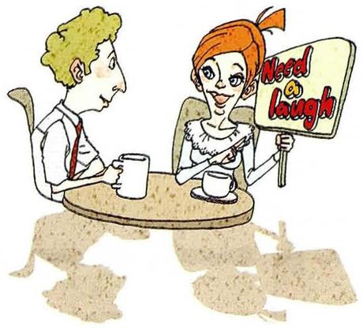
Wanting to change the topic
What you seeA woman at a café table holding up a small card that says Let's chat! — she's steering the conversation somewhere else.
What you say"Anyway…" / "Speaking of which…" / "On a different note…"
Say it like this"Anyway" is the easiest — one word, and everybody knows the topic just changed. "Speaking of which" is nicer when you can connect the new topic to the old one. "On a different note" is what I'd use in a meeting.
12
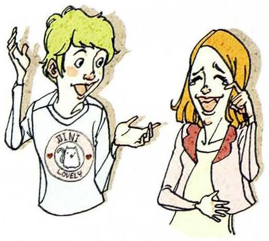
You think someone is joking
What you seeA man with one hand up and pointing, eyebrows high, mouth open — that "you can't be serious" face. The woman is grinning.
What you say"Are you serious?" / "You're kidding, right?" / "Are you pulling my leg?"
Say it like this"You're kidding, right?" is the most common. "Are you pulling my leg?" is a fun one — it literally means "are you joking", but it sounds a bit old-fashioned and charming. In a text message people just write "no way".
13
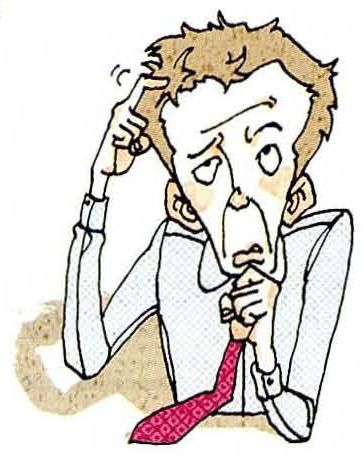
You don't get someone's real meaning
What you seeA man scratching his head, frowning, his tie pulled loose — he's not just confused by the words, he's confused by what they add up to.
What you say"I'm not sure I follow." / "What are you getting at?" / "Are you saying that…?"
Say it like this"I'm not sure I follow" is the polite one — it means I understood the words but not the point. "What are you getting at?" is more direct; you'd use it with a friend or when you suspect the person is hinting at something. And "Are you saying that…?" is powerful, because you repeat their point back and make them confirm it.
14
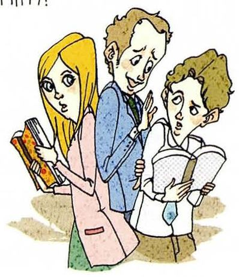
Interrupting someone
What you seeA woman with notebooks in her arms stepping forward in front of a man and another person — physically cutting in.
What you say"Sorry to interrupt, but…" / "Can I just say something?" / "If I could jump in here…"
Say it like this"Sorry to interrupt, but…" is the safe one, and the but matters — it tells them you're about to say something, so they stop. "Can I just say something?" is fine in a group. And "If I could jump in here…" is what you'd say in a meeting, especially if someone senior is talking.
15
Apologizing to someone
What you seeA man rubbing the back of his neck and looking away — the classic embarrassed, "I messed up" body language.
What you say"I'm really sorry." / "I'm sorry — that was my fault." / "I apologize for the trouble."
Say it like this"I'm really sorry" is fine, but it's stronger with the second half: "I'm sorry — that was my fault." Admitting fault is what makes an apology land. For anything formal, "I apologize for the trouble" is the standard, and "my apologies" is the short written version.
05重点词汇（美式音标）
这一课的名词和动词都不难，难的是「搭配」。第三列专门给你这些说法连在一起用的样子。
A · 这些场合里的关键词
词
音标
课上怎么用
中文
interrupt
/ˌɪntəˈrʌpt/
Sorry to interrupt, but… 及物动词，直接接人：interrupt sb
打断
apologize
/əˈpɑːlədʒaɪz/
apologize to sb for sth 对某人 for 某事。别漏 to
道歉
reveal
/rɪˈviːl/
Don't reveal it to anyone.
透露
condolences
/kənˈdoʊlənsɪz/
My condolences. / Please accept my condolences. 只用于有人去世。用错场合会很尴尬
I'd say "Nice to meet you." If it's a formal setting — like a job interview or meeting my supervisor's colleague — I'd say "It's a pleasure to meet you." And I'd usually add "I've heard a lot about you," if that's true, because it makes the other person feel good.
答完主句后加一个 if it's formal 场景限定，再补一个进阶表达，就能答出层次。别只说一句 Nice to meet you 就停。
Which of these expressions do you actually use in English?
Honestly, only a few. I use "Nice to meet you" and "Sorry, could you say that again?" all the time. But "My lips are sealed" — I've never said that out loud. I know what it means, but I'd probably just say "I won't tell anyone."
In Chinese, what do we say for "my lips are sealed"?
We'd say something like "I won't say a word" — actually in Chinese it's more like "I'll take it to my grave," which is much more dramatic. English is lighter. That's an interesting difference: in Chinese, promising to keep a secret sounds very serious, but in English "my lips are sealed" is almost playful.
中英对照是这节课最好的加分点。take it to my grave 这种对应说法老师会很感兴趣，而且能自然引出「语气差异」的讨论。
How do you disagree with someone politely?
I'd start by acknowledging their point — "I see what you mean" — and then say "but I'd look at it differently." The key is not putting "no" at the front. If I just say "No, that's wrong," the conversation becomes a fight. But if I say "That's a good point, although…", we can keep talking.
「先承认再转折」是英语文化里最重要的社交技巧之一，老师听到 the key is not putting "no" at the front 这句会明显认可。
Is there any expression here that would sound rude if you used it?
"Am I making myself clear?" would. It sounds like a teacher warning a student, or even a parent. And "No way" can be rude depending on your tone — with friends it's fine, with someone you don't know it sounds dismissive. So a couple of these are only safe with people you're close to.
If you had to learn just five of these for the rest of your life, which five?
I'd pick: "Nice to meet you", "Sorry, could you say that again?", "Sorry to interrupt", "I'm so sorry to hear that", and "Anyway". Those five cover meeting someone, not understanding, butting in, bad news, and escaping a conversation. That's basically my whole social life.
最后那句自嘲（that's basically my whole social life）会让老师笑。口语课不怕开玩笑，怕的是干巴巴地答题。
07这节课最容易犯的错
这一课的错误集中在「直译」。中文里非常得体的说法，逐字翻成英文往往很怪。
✗Nice to meet you, I have heard your name for a long time. ✓Nice to meet you — I've heard a lot about you.
「久仰大名」不能直译成 heard your name。标准说法是 I've heard a lot about you。
✗Please repeat again. ✓Could you say that again?
repeat 本身已经含「再一次」，再加 again 是重复。而且请人重复用 could you 比祈使句客气得多。
✗I very agree with you. ✓I completely agree. / I couldn't agree more.
very 不能修饰动词。另外 I couldn't agree more 是「再同意不过了」，字面否定但意思是最高级同意，很多人会理解反。
✗You are joking me. ✓You're joking, right? / You're kidding me.
joke 不作及物动词用这种结构。要么 joke about sth，要么用 kid sb。
✗I apologize you. ✓I apologize to you. / I owe you an apology.
apologize 是不及物动词，对人要加 to。想更自然就用 I owe you an apology。
✗Please eat it, it is very delicious. ✓You should try this — it's really good.
delicious 在英语口语里其实很少用，听起来像广告词。日常说 really good 或 amazing 更自然。
✗I am sorry to hear that you are sick, please take care of your body. ✓Sorry to hear you're sick — take care of yourself.
「保重身体」说 take care of yourself 或 look after yourself，不说 take care of your body，那听起来像在护理一具身体。
✗Let me change a topic. ✓Anyway… / Let's move on to something else.
话题用 the topic 或 the subject，不是 a topic —— 指的是当前正在聊的那个。而且口语里直接说 Anyway 最省事。
挑 6 句必背建议：Nice to meet you / I'm not sure I agree / Could you say that again / Sorry to interrupt / I'm so sorry to hear that / Anyway。这六句覆盖了 90% 的日常社交。